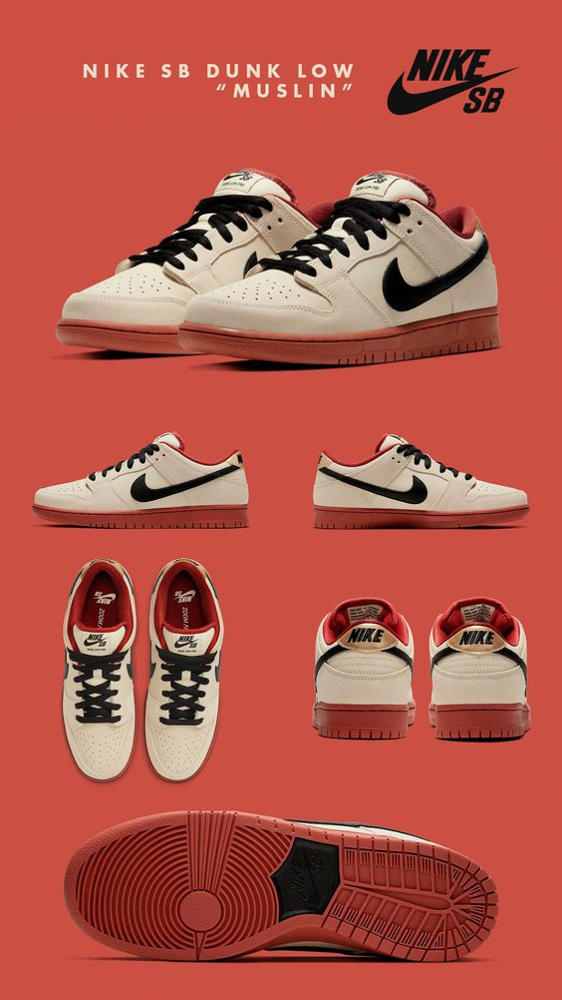
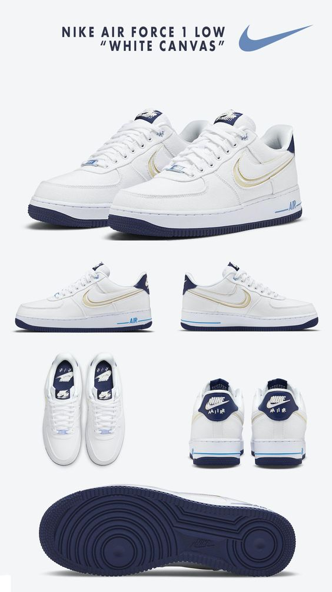
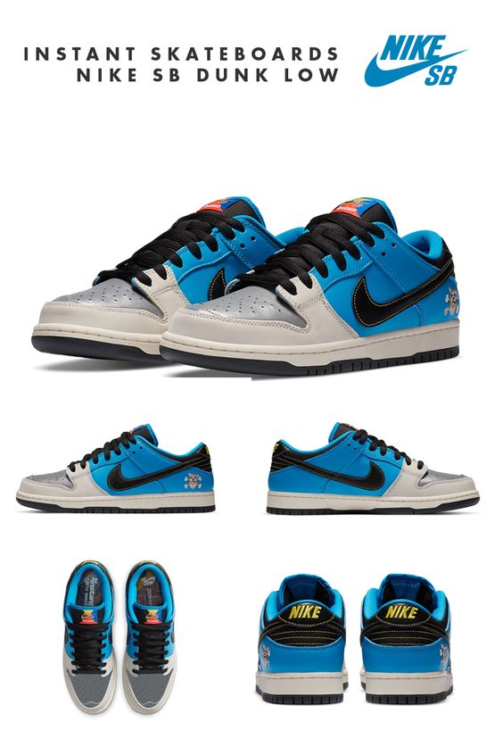
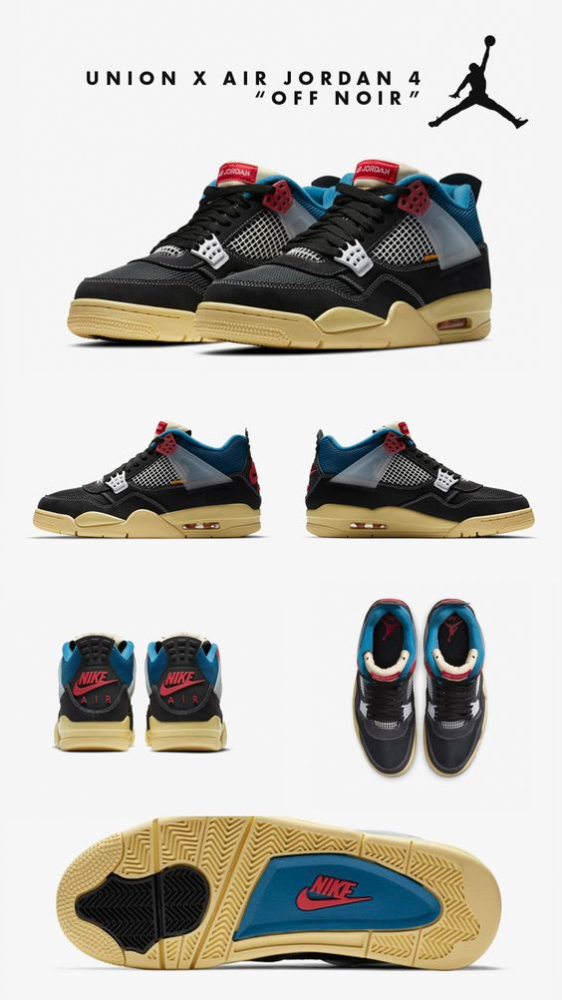

<section>
  <div class="container">
    <div class="text-center mb-5">
      <h3 class="highlight header-colorize text-uppercase mb-3 mt-2 fw-bold">
        Tin Tức X-News, Sneaker Cập Nhập 24h
      </h3>
    </div>
    <div class="row row-cols-1 row-cols-md-2 g-4">
      <div class="col">
        <div class="card">
          
          <div class="card-body">
            <h5 class="card-title">Nike SB Dunk Low</h5>
            <p class="card-text">
              Cũng giống như Air Jordan 1 – đôi giày đã được SNKRVN giới thiệu
              rất nhiều đến bạn đọc, Nike SB Dunk Low là một mẫu giày thể thao
              thường được mang khi thi đấu bóng rổ. Người anh em của Air Jordan
              1 này có khả năng bảo vệ mắt cá chân cũng như tạo độ bám, nên
              ngoài việc sử dụng trong các sân bóng, Nike SB Dunk Low cũng được
              cộng đồng trượt ván toàn thế giới ưa thích. Ra mắt vào những năm
              đầu thập niên 80, đôi Nike SB Dunk Low đã xuất hiện “rất đúng lúc”
              vào thời kỳ hoàng kim của bộ môn bóng rổ khi bộ môn này tại các
              trường đại học ở Mỹ ngày càng được phổ biến rộng rãi và thu hút
              công chúng. Nhờ vào đó, tên tuổi của đôi giày thi đấu mà các cầu
              thủ mang cũng được mọi người để mắt, săn đón nhiệt liệt.
            </p>
          </div>
        </div>
      </div>
      <div class="col">
        <div class="card">
          
          <div class="card-body">
            <h5 class="card-title">Nike Air Force 1 Low "WHITE CANVAS"</h5>
            <p class="card-text">
              Ta có thể thấy, dẫu sở hữu tuổi đời khá lâu, thế nhưng Nike Air
              Force 1 Low "WHITE CANVAS" vẫn chứng tỏ sức hút bền bỉ của mình
              theo năm tháng khi vẫn được các đầu giày yêu thích và đón nhận cho
              đến tận bây giờ. Mới đây, Nike Air Force 1 Low "WHITE CANVAS" –
              đôi sneaker được săn lùng nhiều trong thời gian qua, chuẩn bị được
              Nike bày bán trong các cửa hàng bán lẻ của mình với một phiên bản
              mới. Được phát triển từ phối màu “Panda” – “Reserve Panda” là một
              phiên bản đảo ngược các khối màu của đôi Nike Dunk Low thông
              thường. Việc phát hành bản mới này sẽ giúp cho các fan của Nike có
              nhiều lựa chọn hơn. Bên cạnh đó, nhãn hàng cũng chú trọng và dự
              định đến việc phát triển thêm nhiều bản mở rộng khác, cũng như
              việc thêm thắt những chi tiết đặc biệt vào sản phẩm trong thời
              gian sắp tới.
            </p>
          </div>
        </div>
      </div>
      <div class="col">
        <div class="card">
          
          <div class="card-body">
            <h5 class="card-title">Istant Skateboards Nike SB Dunk Low</h5>
            <p class="card-text">
              Tiffany & Co. x Nike đã thu hút rất nhiều sự chú ý của truyền
              thông và cộng đồng sneaker thế giới tuần trước với tiết lộ bất ngờ
              về sự hợp tác chưa từng có khi ra mắt đôi Tiffany & Co. x Nike Air
              Force 1 Low. Cả hai thương hiệu rất biết cách làm các sneakerhead
              điên cuồng khi cho đăng tải một quảng cáo lớn trên Thời Báo New
              York với hình hộp giày Nike đồng thương hiệu Tiffany và có cả logo
              lẫn cụm từ “A Legendary Pair”.Không chỉ tấn công mặt báo giấy,
              Tiffany & Co. và Nike cũng bắt đầu gửi đôi giày đình đám của mình
              đến các KOLs hạng A và LeBron James chính là cái tên đầu tiên xuất
              hiện với đôi sneakers được cộp mác “huyền thoại” này.
            </p>
          </div>
        </div>
      </div>
      <div class="col">
        <div class="card">
          
          <div class="card-body">
            <h5 class="card-title">Union X Air Jordan 4 "OFF NOIR"</h5>
            <p class="card-text">
              Không chỉ là một biểu tượng về âm nhạc đương đại, Justin Bieber
              còn sở hữu một gu thời trang cá tính khi anh từng diện rất nhiều
              outfit truyền cảm hứng. Khi thương hiệu JB dần trở nên phổ biến
              qua những tác phẩm âm nhạc đình đám, đó cũng là lúc ông chủ của
              Drew House bắt đầu thể hiện rõ nét hơn phong cách mạnh mẽ trong
              việc ăn mặc của mình. Justin Drew Bieber là một nam ca sĩ kiêm
              sáng tác nhạc người Canada. Bieber nổi tiếng nhờ khả năng kết hợp
              đa dạng nhiều dòng nhạc và là nghệ sĩ đóng vai trò quan trọng
              trong nền âm nhạc đại chúng hiện nay. Anh được giám đốc điều hành
              thu âm người Mỹ Scooter Braun phát hiện và ký hợp đồng với RBMG
              Records vào năm 2008, sau đó gây chú ý với việc phát hành EP 7 ca
              khúc đầu tay My World (2009) và sớm trở thành một thần tượng tuổi
              teen.
            </p>
          </div>
        </div>
      </div>
    </div>
  </div>
</section>
